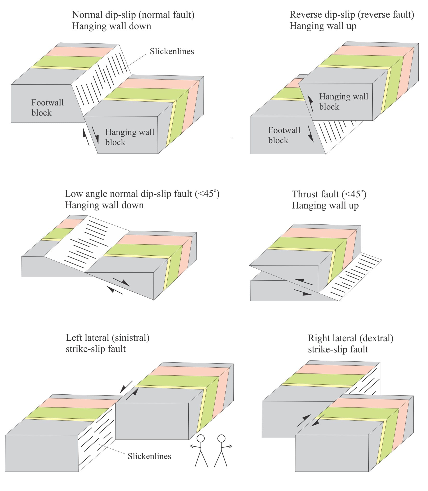

Fault Classification
Common high and low angle dip-slip, and sinistral and dextral strike-slip faults through dipping strata.
from https://www.geological-digressions.com/faults-some-common-terminology/
Schames and images to explain three-dimensional distribution of rock units and the deformation they have undergone
Common high and low angle dip-slip, and sinistral and dextral strike-slip faults through dipping strata.
from https://www.geological-digressions.com/faults-some-common-terminology/

Folds are formed during ductile deformation of rock layers.